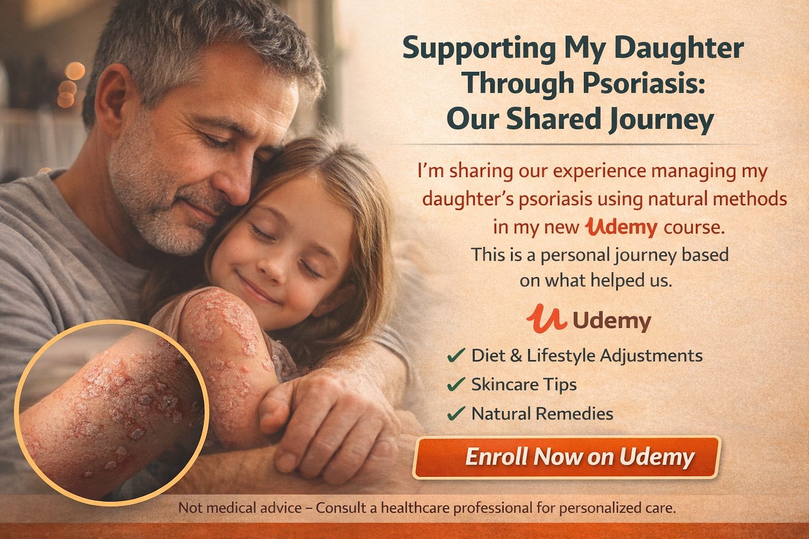

This course explores evidence-based nutritional, environmental, and lifestyle strategies that can help support the management of psoriasis. Learn how dietary patterns, inflammation, gut microbiota, antioxidants, and nervous system balance may influence autoimmune skin conditions.
Understand how diet influences inflammatory pathways involved in psoriasis and other autoimmune conditions.
Discover foods that support immune balance, reduce inflammation, and help promote healthier skin.
Learn which foods may worsen inflammation and potentially aggravate psoriasis symptoms.
Explore how digestive health and the microbiome influence immune function and skin health.
Study the scientific evidence behind omega-3 fatty acids, curcumin, antioxidants, vitamins, and minerals.
Understand the relationship between stress, neurogenic inflammation, and autoimmune skin conditions.
Discover scientific insights and practical nutrition strategies that can help support skin health and reduce inflammatory triggers associated with psoriasis.
Take your skills to the next level with these carefully designed courses focused on growth, health, and learning.